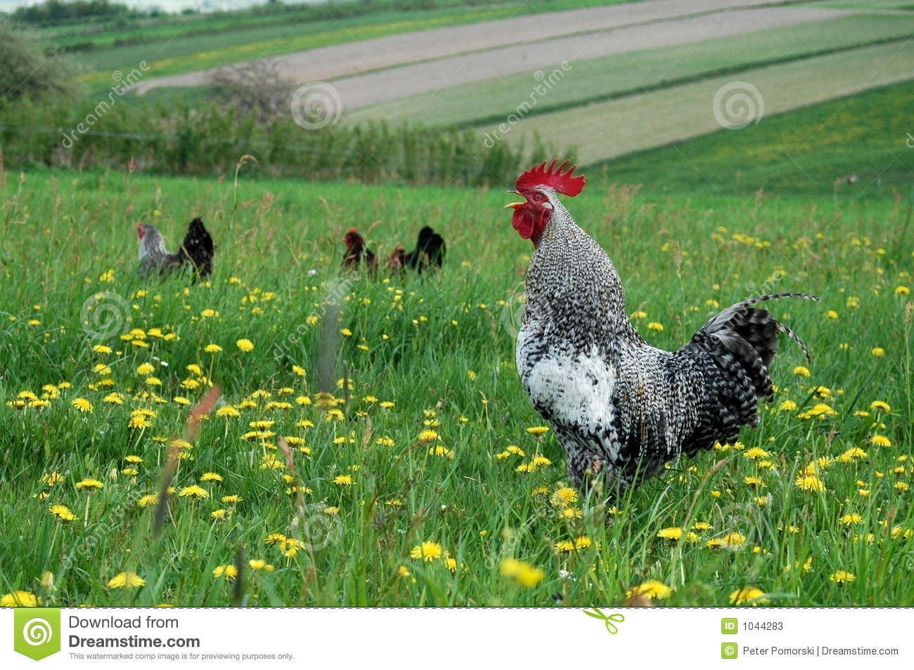

But February made me shiver With every paper I'd deliver Bad news on the doorstep I couldn't take one more step
A long long time ago I can still remember how that music Used to make me smile And I knew if I had my chance That I could make those people dance And maybe they'd be happy for a while But February made me shiver
With every paper I'd deliver Bad news on the doorstep I couldn't take one more step
I can't remember if I cried when I Read about his widowed bride But something touched me deep inside The day the music Died So bye, bye Miss American Pie Drove my Chevy to the levee but the levee was dry Them good ole boys were drinking whiskey 'n' Rye Singin' this'll be the day that I die This'll be the day that I die Did you write the book of love And do you have faith in God above If the Bible tells you so? Now do you believe in rock and roll? Can music save your mortal soul? And can you teach me how to dance real slow? Well, I know that you're in love with him 'Cause I saw you dancin' in the gym You both kicked off your shoes Man, I dig those rhythm and blues I was a lonely teenage broncin' buck With a pink carnation and a pickup truck But I knew I was out of luck The day the music died I started singin' bye, bye Miss American Pie Drove my Chevy to the levee but the levee was dry Them good ole boys were drinking whiskey 'n' Rye Singin' this'll be the day that I die This'll be the day that I die 